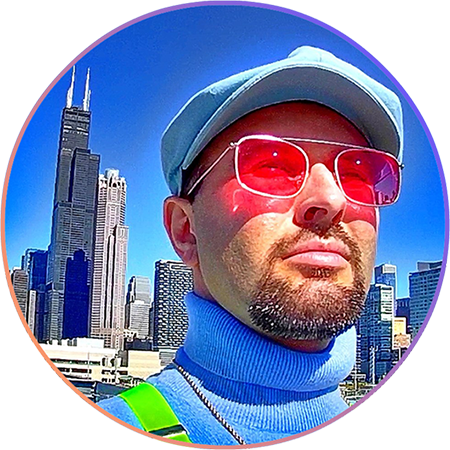

Hello! My name is Chris Sinclair and I'm an artist who specializes in visual art and technology! In 2011, I graduated with a B.F.A. in Digital Media from
Kendall College of Art & Design with a focus on 2D Animation. Since then, I shifted more towards occasional freelance animation while working in
the field of IT. I've recently completed a B.A. in Web Technologies from Loyola University Chicago with a focus on Data Science, graduating with Honors
in December 2023. It is my goal to demonstrate my passion for both of these fields at a professional level.


